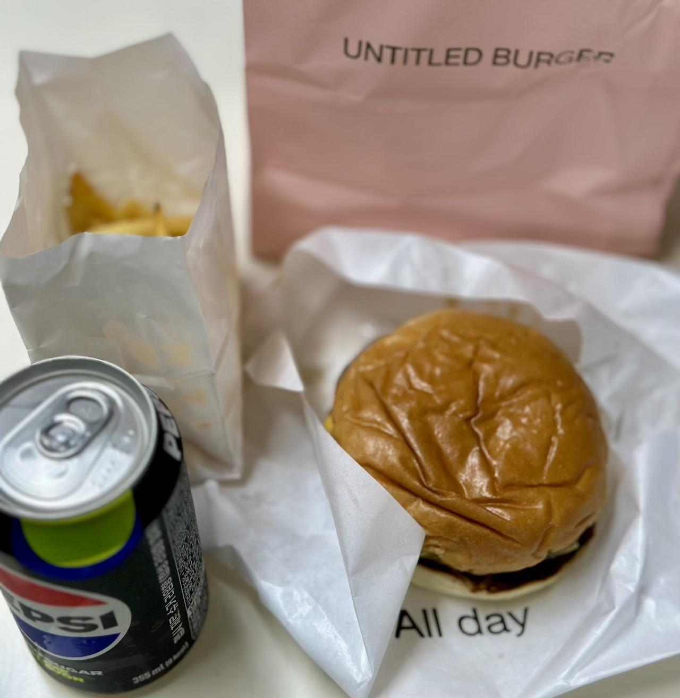

언타이틀 버거의 올데이 버거 세트에 관한 기록
오늘도 사상 최악의 고민이 시작되었다. 점심을 뭘 먹을까 하는 것 말이다. 다행히도(?) 오늘은 아침 일정이 너무 힘들어서 햄버거로 보충해야겠다는 생각만 그득했기에 이 고민을 무사히 넘길 수 있게 되었다. 며칠 전에도 햄버거를 먹었는데 뭐 아무렴 어떨까.
결국 배민을 켜고 오랜만에 버거 카테고리를 정독해 봤다. 마침 추천항목에서 금천구의 못 보던 수제버거 집을 발견했다. 쿠폰까지 준다고 하니 버거 매니아로썩 그냥 지나칠 수가 없다. 그래서 바로 주문했다.
 대충 이번에 시킨 구성들
재료가 다채롭게 들어간 올데이 버거, 제로콜라, 감자튀김 구성의 평범한 세트 메뉴로 주문했다. 다만 마침 쿠폰도 있고 해서 호기롭게 버거에 패티 하나를 추가하긴 했다. 어쨌거나 점심 시간임에도 나름 배달이 빨리 왔다.
야채가 쏠린 게 꼭 퀄리티 좋은 패스트푸트 체인점 것 같기도?
버거의 맛은 뭐라고 해야 할 지 잘 모르겠다. 그냥 흔하고 무난한 수제버거 느낌이라고 해야 할까? 맛이 없는 건 절대 아니나 뭔가 특색이 있는 것도 아닌 것 같다. 다만 패티를 두 장이나 넣으니 좀 짜다는 느낌도 있으니 이건 어디까지나 개인차가 클 듯하다.
버거의 식감은 나쁘진 않았다. 단지 번이 찌그러져 온 것이 식감을 망가뜨려 안타까울 뿐이었다. 애초에 포장 자체가 이러니 번이 찌그러지는 건 배달로는 피할 수 없는 일 같기도 하다. 어쨌든 패티를 추가했더니 확실히 풍족하게 씹히는 맛은 있었다. 패티는 육즙이 많은 건 아니나 퍽퍽하진 않았기에 무난했다. 다만 패티 두 장은 야채 식감을 많이 죽여버리는 것 같아서 패티는 한 장이면 충분하거나 굳이 넣겠다면 야채도 더 추가하는 게 좋을 것 같다.
감자튀김은 적당히 바삭한 느낌이 있어 좋았다. 적당히 자극적인(?) 짠 맛도 좋았다. 검정깨는 비주얼적 이점과 함께 식감도 좀 올려준 점도 좋았던 것 같다.
결론
다시 먹어볼 생각은 있다. 버거 자체가 그저 별 특색이 없었을 뿐 맛은 있는 편이었고 그래서 버거 자체의 기본기에 충실했던 거라고도 볼 수 있을 것 같다. 이 정도면 합격이다.
근데 사실 개인적으로 버거는 맛 없는 거 아니면 다 합격일 듯하다. 왜냐하면 이 글을 쓰는 작자는 심각한 버거빠라서 햄버거라면 무조건 추가점수가 붙기 때문이다.
어쨌든 근처 수제버거 집이 더이상 사라지지는 않았으면 좋겠다는 기원을 마지막으로 글을 마무리하자.